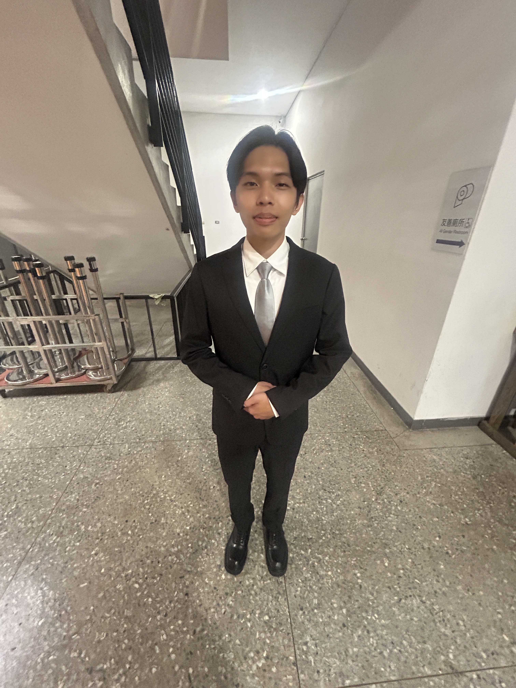
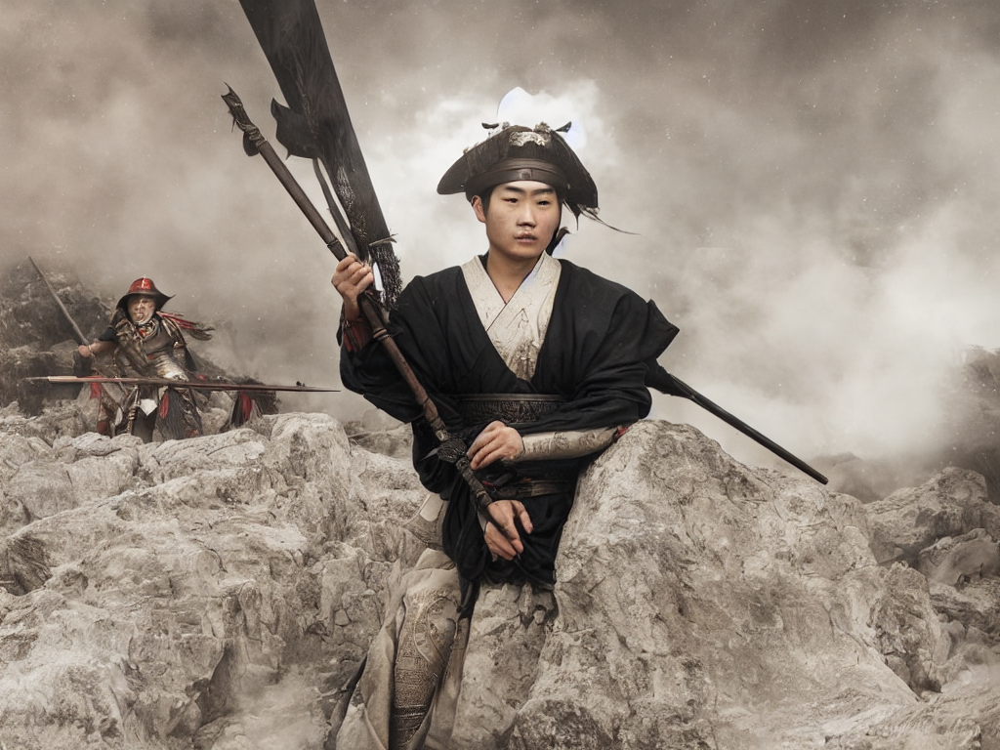
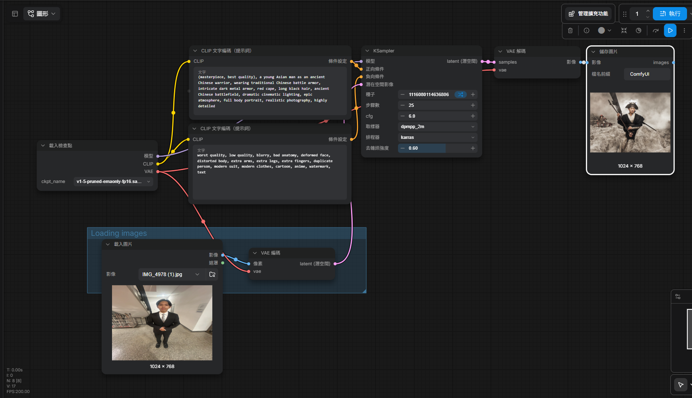

01 / 原圖與生成圖
左側為自行拍攝的原始照片，右側為 ComfyUI 生成後的古風戰士影像。


02 / 完整工作流
ComfyUI 節點式影像生成流程與參數設定的畫面紀錄。

03 / 使用的正反提示詞
Positive Prompt / 正向提示詞
(masterpiece, best quality), a young Asian man as an ancient Chinese warrior, wearing traditional Chinese battle armor, intricate dark metal armor, red cape, long black hair, ancient Chinese battlefield, dramatic cinematic lighting, epic atmosphere, full body portrait, realistic photography, highly detailed
Negative Prompt / 反向提示詞
worst quality, low quality, blurry, bad anatomy, deformed face, distorted body, extra arms, extra legs, extra fingers, duplicate person, modern suit, modern clothes, cartoon, anime, watermark, text
04 / 個人心得
這次使用 ComfyUI 進行圖生圖練習，讓我第一次實際理解節點式工作流的運作方式。剛開始我以為把照片拖進軟體就可以直接生成，但後來才發現，還需要建立完整的圖生圖流程，並載入適合的模型。
實作過程中最困難的是找到 ComfyUI Desktop 的模型資料夾，以及處理照片尺寸過大、生成時間太長的問題。我也發現 Denoise 數值會明顯影響結果：數值太低時，生成圖跟原圖很像；調高後，服裝與場景的風格變化才更明顯。
最後，我成功將自己的照片轉換成古風戰士的影像。這次作業讓我學到 AI 影像創作不只是輸入一句文字，更需要理解模型、節點連線、提示詞與參數之間的關係，才能逐步調整出想要的效果。